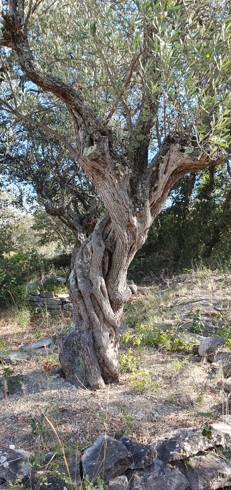

Les oliviers du vent
Je parle aux arbres
comme à des dieux fatigués.
Eux seuls se souviennent
du silence où nous sommes nés.
Ils se tordent,
vivants,
sous le poids
des années,
leurs troncs
sont des fleuves
figés de lumière.
Chaque écorce abrite
un souffle,
une prière,
un mot que la terre
a longtemps murmuré.
Leur tronc parle
Une langue lente,
plus vieille
que la pierre.
Chaque torsion
est une phrase,
chaque creux,
une mémoire.
Ils ne cherchent plus
la lumière —
elle habite déjà
leur écorce.
Le soleil s’y endort,
comme un dieu las
revenu des hommes.
Leurs racines boivent
le sel des collines,
et le ciel,
patient,
s’y penche
chaque soir.
Ils ont vu
l’homme naître,
aimer,
puis s’égarer,
et n’ont gardé de lui
que la trace fine
d’un geste,
d’un espoir.
Leurs racines boivent
le sel des collines,
et le vent,
chaque soir,
leur confie
ses prières effilées.
Ils ont vu passer
les siècles,
les amours,
les famines,
et toujours offert
leurs fruits
comme on tend
le cœur.
Dans leurs veines coule
un or immobile,
la lente sève du silence
et du feu.
Leur ombre console,
leur fruit est l’éveil,
et leurs branches,
tressées d’étoiles fragiles,
parlent aux dieux anciens
mieux que nos vœux.
Sous leurs bras
noueux,
le silence
a pris racine.
Un silence
d’huile
et d’or,
un silence
qui guérit.
Ô arbres debout
dans la poussière,
vous êtes
le visage du temps,
et vos rides
sont des chemins
où l’âme se souvient
d’avoir été vivante.
Ô arbres de pierre
et de mémoire,
vos torses sculptés
par le vent
sont des visages —
je lis dans vos plis
la fatigue
et la gloire
de tout ce qui
résiste aux âges.
Crédit photo Christiane Contejean
Djamel Metref
At Yenni le 30 octobre 2025

← Tous les poèmes